Ga xe lửa Đà Lạt – Góc sống ảo cổ kính bậc nhất Đà Lạt 2025
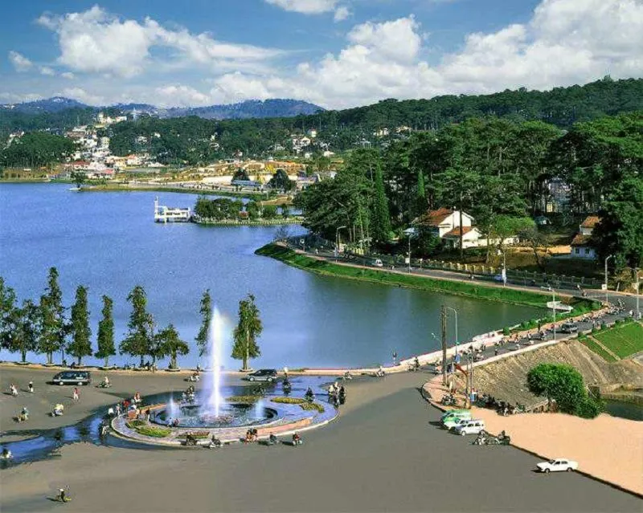
Mục lục bài viết
- 1. Tổng quan về ga xe lửa Đà Lạt
- 2. Ga xe lửa Đà Lạt được xây dựng vào thời gian nào?
- 3. Khám phá nét kiến trúc độc đáo của ga xe lửa cổ Đà Lạt
-
4. Gợi ý những góc “sống ảo” cực chất tại ga xe lửa Đà Lạt
- 4.1. Cổng chính nhà ga xe lửa Đà Lạt
- 4.2. Khu vực phòng chờ mua vé tại ga xe lửa Đà Lạt
- 4.3. Các toa tàu gỗ cũ tại ga xe lửa Đà Lạt
- 4.4. Khu đường ray xe lửa ở ga xe lửa Đà Lạt
- 4.5. Đầu tàu hơi nước cổ – Biểu tượng độc đáo tại ga xe lửa Đà Lạt
- 4.6. Không gian bên trong toa tàu cổ tại ga xe lửa Đà Lạt
- 5. Gợi ý các điểm du lịch gần ga xe lửa Đà Lạt không nên bỏ lỡ
- 6. Gợi ý quán ăn ngon sau khi khám phá ga xe lửa Đà Lạt: Tiệm Nướng & Chill Xóm Lèo
Ga xe lửa Đà Lạt là một trong những nhà ga cổ đẹp nhất Đông Dương, mang đậm dấu ấn kiến trúc Pháp và gắn liền với lịch sử phát triển của thành phố ngàn hoa. Với thiết kế mái tam giác đặc trưng, đường ray răng cưa hiếm có và những toa tàu cổ kính, nơi đây không chỉ là công trình có giá trị lịch sử mà còn là điểm tham quan được đông đảo du khách yêu thích.
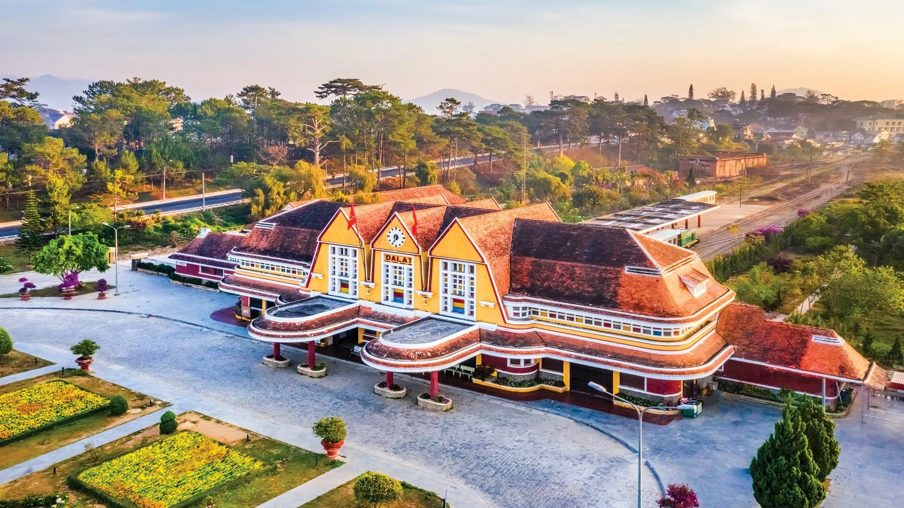
Hiện nay, ga Đà Lạt trở thành tọa độ “sống ảo” không thể bỏ lỡ nhờ không gian đậm chất hoài cổ, đầy nghệ thuật. Đây là điểm dừng chân lý tưởng cho những ai muốn tìm hiểu về quá khứ của thành phố và lưu giữ những khoảnh khắc đẹp trong hành trình khám phá Đà Lạt.
1. Tổng quan về ga xe lửa Đà Lạt
1.1. Địa chỉ và cách di chuyển đến ga xe lửa Đà Lạt
Ga xe lửa Đà Lạt tọa lạc tại số 1 đường Quang Trung, phường 10, thành phố Đà Lạt, tỉnh Lâm Đồng – chỉ cách trung tâm thành phố vài phút di chuyển. Nhờ vị trí thuận tiện, bạn có thể dễ dàng đến đây bằng xe máy, ô tô cá nhân hoặc taxi. Nếu đi từ chợ Đà Lạt, hãy băng qua cầu Ông Đạo, tiếp tục theo đường Trần Quốc Toản hướng về quảng trường Lâm Viên. Sau đó rẽ vào đường Yersin, đi qua Nguyễn Trãi, rồi chạy thẳng đến Quang Trung là sẽ tới nơi.
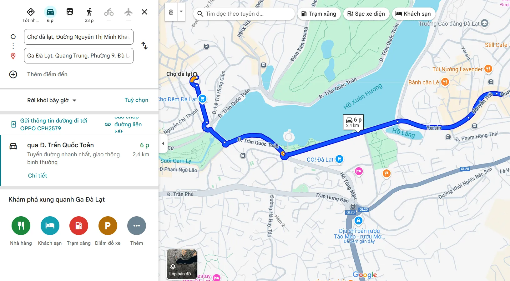
1.2. Giờ hoạt động và giá vé tham quan
Ga Đà Lạt mở cửa đón khách từ 7h30 sáng đến 17h00 chiều hàng ngày. Du khách có thể tự do tham quan, chụp hình, khám phá kiến trúc cổ kính của nhà ga với mức vé vào cổng chỉ 50.000 VNĐ/người. Lưu ý, giá vé và khung giờ có thể thay đổi tùy từng thời điểm, bạn nên liên hệ trước với ban quản lý để nắm thông tin chính xác nhất.
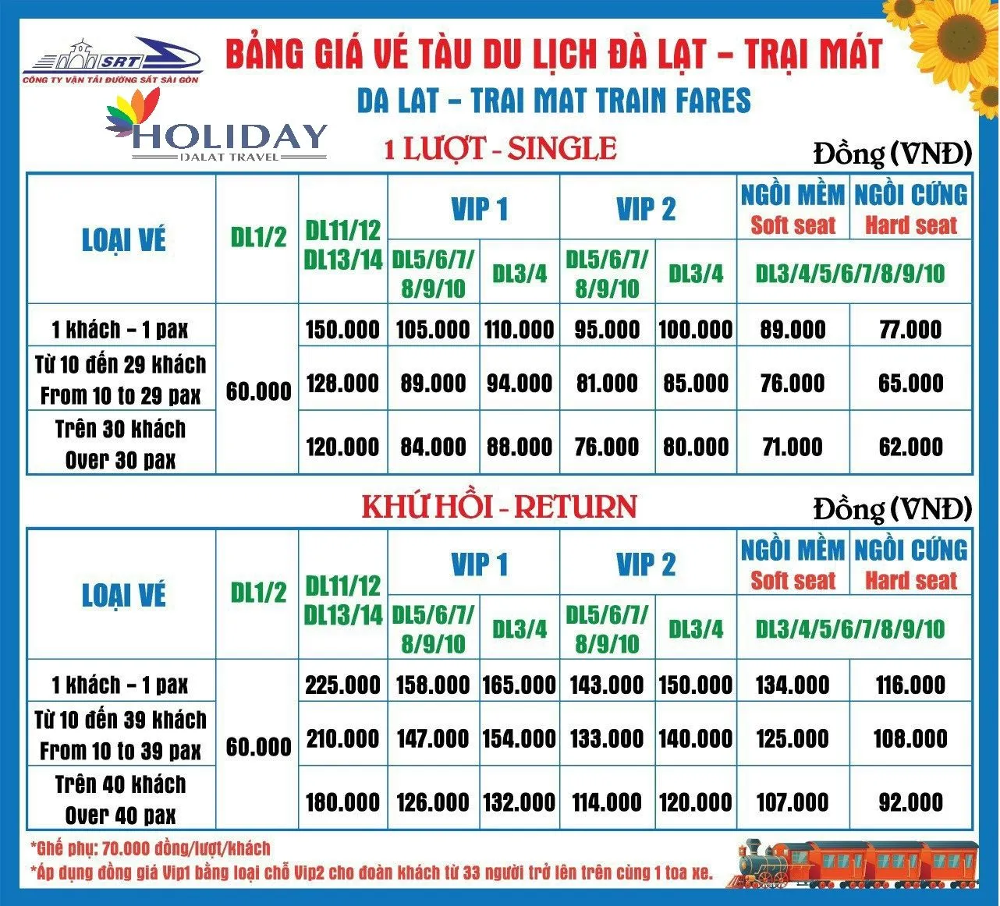
1.3. Ga Đà Lạt có còn tàu hoạt động không?
Mặc dù không còn nằm trong mạng lưới đường sắt quốc gia, ga xe lửa Đà Lạt vẫn vận hành một tuyến tàu du lịch ngắn từ trung tâm thành phố đến ga Trại Mát, cách khoảng 7km. Hành trình mất khoảng 25 phút, thích hợp cho du khách muốn tận hưởng nhịp điệu chậm rãi và ngắm cảnh ngoại ô thơ mộng với rừng thông, vườn hoa và nhà kính trồng rau hai bên đường.
Điểm đến cuối tuyến là chùa Linh Phước (chùa Ve Chai) – ngôi chùa nổi tiếng với kiến trúc độc đáo được tạo nên từ hàng triệu mảnh ve chai. Giá vé tuyến này dao động từ 88.000 – 98.000 VNĐ/lượt, có ưu đãi cho vé khứ hồi và khách đi theo nhóm.
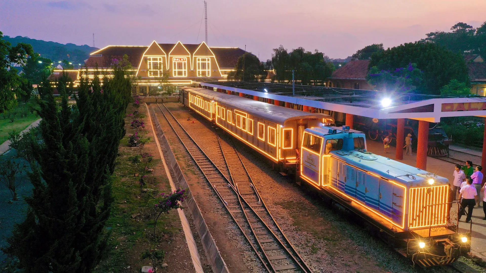
1.4. Những điểm độc đáo chỉ có ở ga xe lửa Đà Lạt
Không chỉ mang ý nghĩa lịch sử, ga Đà Lạt còn nổi bật với nhiều điều “độc nhất vô nhị”:
-
Là nhà ga duy nhất ở khu vực Tây Nguyên.
-
Sở hữu kiến trúc Pháp cổ điển, được mệnh danh là ga xe lửa đẹp nhất Đông Dương.
-
Có độ cao khoảng 1.500m, là nhà ga cao nhất Việt Nam.
-
Là nhà ga duy nhất còn đầu tàu hơi nước hoạt động ở Việt Nam.
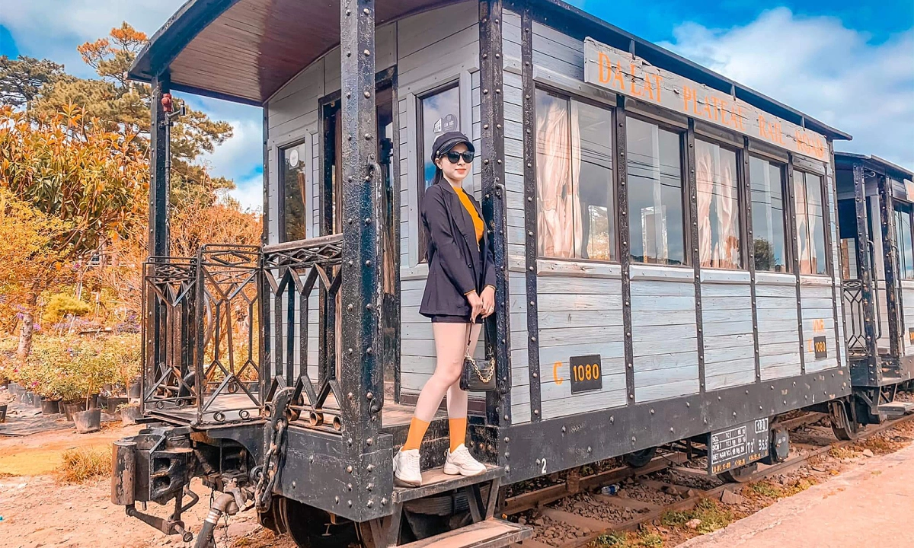
2. Ga xe lửa Đà Lạt được xây dựng vào thời gian nào?
Nhà ga xe lửa Đà Lạt được khởi công xây dựng vào năm 1932 và hoàn thiện vào năm 1938, là một phần trong dự án tuyến đường sắt Tháp Chàm – Đà Lạt dài 84km, nối liền vùng cao nguyên Lâm Viên với vùng duyên hải Phan Rang (Ninh Thuận). Tuyến đường sắt này được khởi xướng từ năm 1908 dưới thời Toàn quyền Đông Dương Paul Doumer, nổi bật với địa hình phức tạp khi độ cao toàn tuyến chênh lệch tới 1.500m.
Công trình được xem là một trong những tuyến đường sắt hiếm có trên thế giới, với 12 nhà ga, 5 hầm xuyên núi, và 16km đường ray răng cưa chuyên biệt – công nghệ lúc đó chỉ có ở Thụy Sĩ và Việt Nam. Nhờ đó, tuyến tàu có thể vượt qua những đoạn dốc tới 12% – con số ấn tượng so với tiêu chuẩn đường sắt thông thường.
Tuy nhiên, đến năm 1972, tuyến đường bị tàn phá bởi chiến tranh và dù đã được phục hồi tạm thời sau năm 1975, nó nhanh chóng ngừng hoạt động do không đạt hiệu quả kinh tế. Phần lớn hệ thống đường ray và các công trình liên quan đã bị tháo dỡ, chỉ còn lại ga Đà Lạt như một minh chứng sống động cho thời kỳ hoàng kim của ngành đường sắt Đông Dương.
Hiện nay, ga không còn phục vụ tàu hỏa liên tỉnh mà được chuyển đổi thành điểm tham quan du lịch nổi tiếng, nơi lưu giữ kiến trúc cổ và dấu ấn lịch sử. Vào năm 2001, công trình này đã được xếp hạng Di tích lịch sử – văn hóa cấp quốc gia, trở thành niềm tự hào của thành phố sương mù.
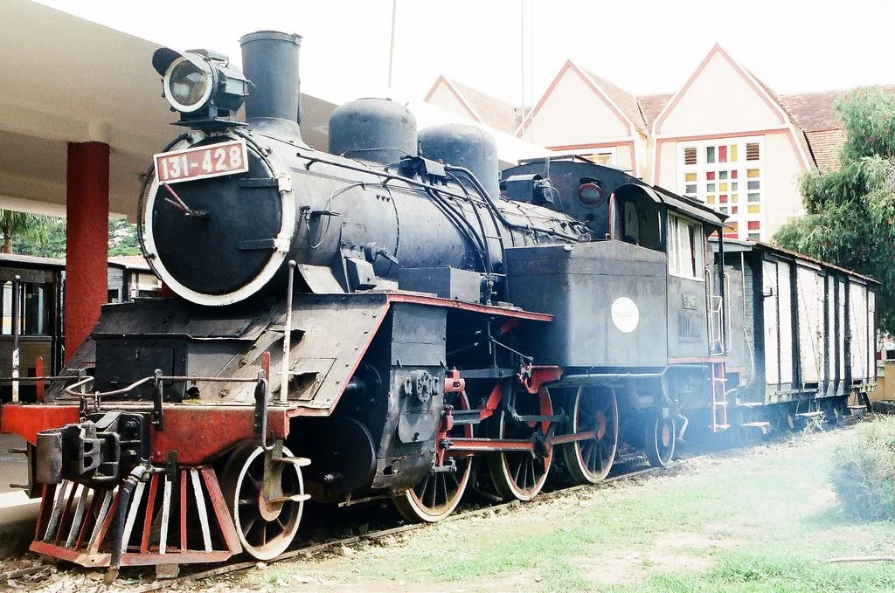
3. Khám phá nét kiến trúc độc đáo của ga xe lửa cổ Đà Lạt
Ga xe lửa Đà Lạt là một công trình kiến trúc đặc sắc được thiết kế bởi hai kiến trúc sư người Pháp là Moncet và Revéron. Điểm nổi bật của nhà ga là sự kết hợp tinh tế giữa phong cách kiến trúc phương Tây và yếu tố văn hóa bản địa. Toàn bộ bố cục nhà ga được xây dựng đối xứng, với phần trung tâm mô phỏng hình ảnh ba đỉnh núi Langbiang – biểu tượng nổi tiếng của vùng đất cao nguyên. Phần mái nhọn lấy cảm hứng từ nhà rông Tây Nguyên, tạo nên một tổng thể hài hòa, mang đậm dấu ấn vùng miền.
Ngay chính diện của khối trung tâm là một mặt đồng hồ lớn – chi tiết đặc biệt ghi dấu thời điểm bác sĩ Yersin phát hiện ra Đà Lạt. Phía trước là hai sảnh riêng biệt: một dành cho khách chờ tàu, một cho khu vực vận chuyển hàng hóa. Không gian bên trong đơn giản nhưng khoa học, thể hiện rõ tư duy thiết kế Pháp đầu thế kỷ 20. Với sự kết hợp giữa thẩm mỹ kiến trúc và giá trị lịch sử, ga Đà Lạt không chỉ là điểm check-in nổi bật mà còn là di sản văn hóa đặc sắc của thành phố mù sương.
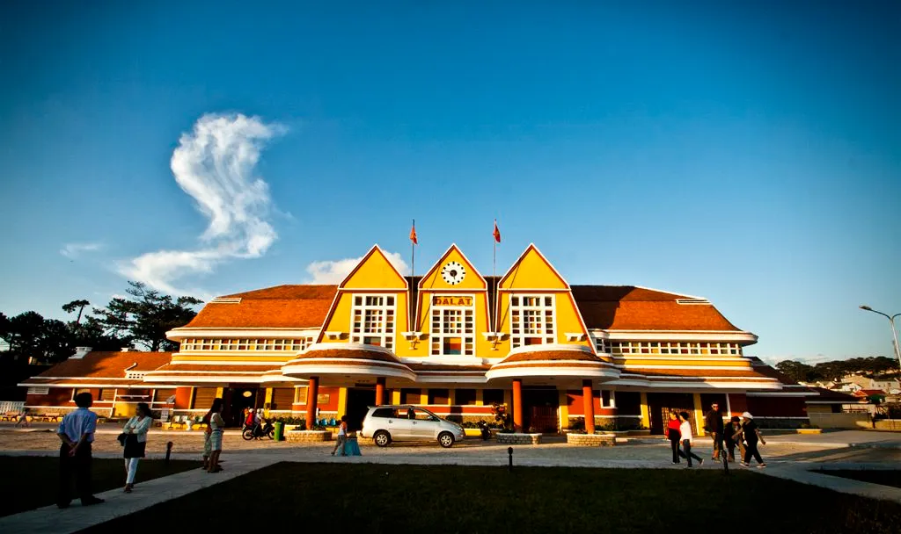
4. Gợi ý những góc “sống ảo” cực chất tại ga xe lửa Đà Lạt
Với vẻ đẹp cổ kính đậm chất châu Âu giữa lòng Đà Lạt mộng mơ, ga xe lửa Đà Lạt từ lâu đã trở thành “studio ngoài trời” thu hút hàng nghìn lượt du khách đến chụp ảnh check-in, ảnh cưới mỗi năm. Dưới đây là những tọa độ chụp hình siêu đẹp bạn không nên bỏ qua:
4.1. Cổng chính nhà ga xe lửa Đà Lạt
Ngay khu vực trước cổng là điểm dừng chân lý tưởng để ghi lại những khung hình với nền là mái chóp đặc trưng cùng không gian sân rộng rợp hoa và nắng. Chỉ cần một góc máy hợp lý, bạn đã có ngay bức ảnh mang đậm dấu ấn Đà Lạt xưa.
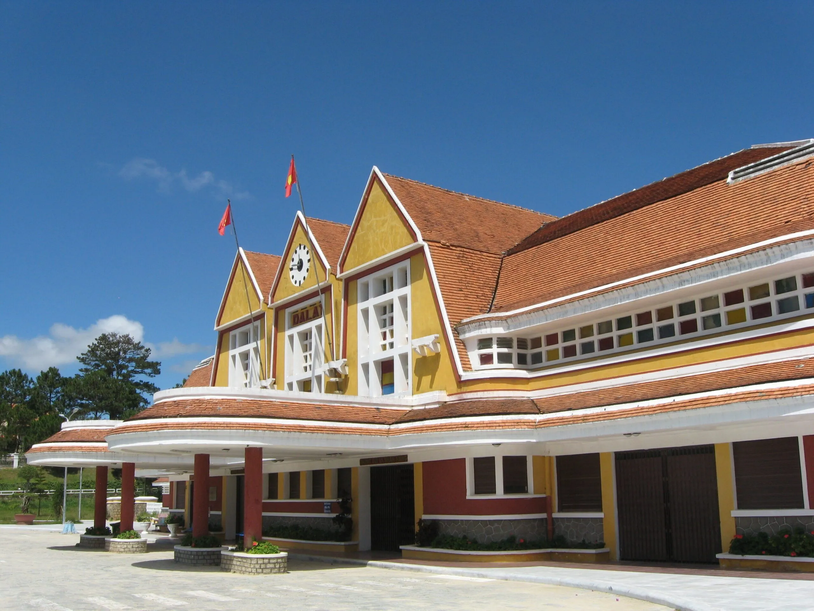
4.2. Khu vực phòng chờ mua vé tại ga xe lửa Đà Lạt
Ít người biết rằng phòng chờ mua vé bên trong nhà ga lại là một background cực “nghệ” với thiết kế kính cũ, bàn ghế gỗ, ánh sáng nhẹ và không khí hoài cổ. Một lựa chọn hoàn hảo cho những ai yêu phong cách vintage, cổ điển.
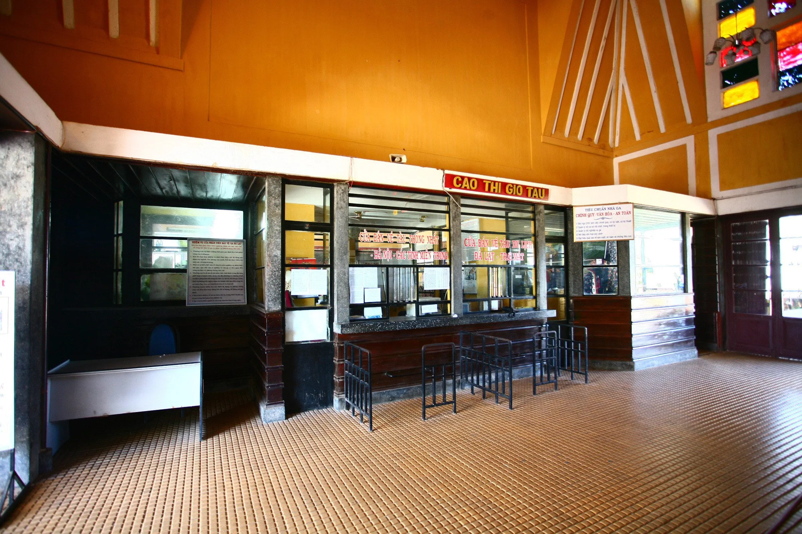
4.3. Các toa tàu gỗ cũ tại ga xe lửa Đà Lạt
Những toa xe gỗ cổ vẫn được bảo tồn kỹ lưỡng tại ga, là điểm nhấn không thể thiếu cho những bộ ảnh đậm chất hoài niệm. Màu nâu trầm, cửa sổ cổ kính cùng ánh nắng Đà Lạt xuyên qua tạo nên không gian đậm chất phim điện ảnh.
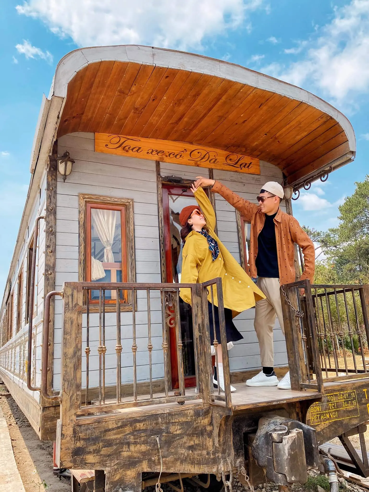
4.4. Khu đường ray xe lửa ở ga xe lửa Đà Lạt
Đường ray dài chạy giữa khoảng không thiên nhiên rộng mở, phủ bóng thông xanh và gió mát, là nơi lý tưởng để tạo ra những bức ảnh vừa thơ mộng vừa cá tính. Chỉ cần đứng dọc theo ray tàu và pose dáng nhẹ nhàng, bạn đã có một shot hình “triệu like”.
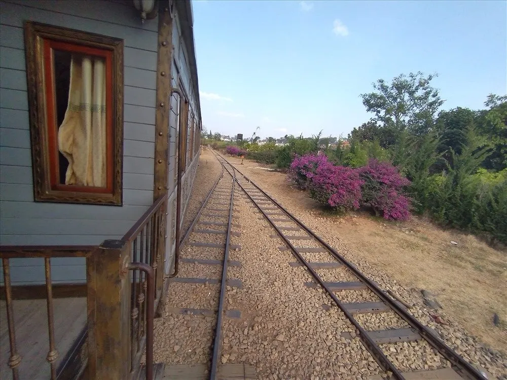
4.5. Đầu tàu hơi nước cổ – Biểu tượng độc đáo tại ga xe lửa Đà Lạt
Chiếc đầu tàu hơi nước trưng bày tại ga là điểm check-in nổi bật, mang phong cách retro đậm nét. Đây là nơi giới trẻ thường chọn để tạo nên những bức ảnh “chất lừ”, mạnh mẽ và khác biệt.
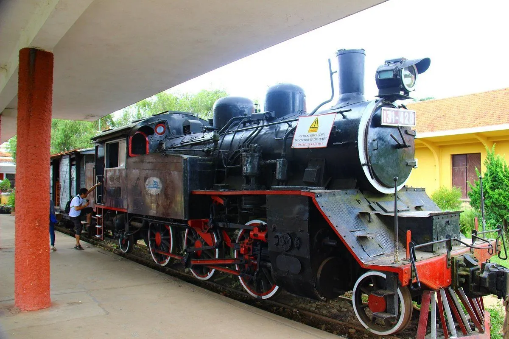
4.6. Không gian bên trong toa tàu cổ tại ga xe lửa Đà Lạt
Phía trong các toa tàu vẫn giữ lại nguyên vẹn nội thất cổ: từ ghế ngồi gỗ, cửa kính đến tông màu sẫm mang theo dấu ấn thời gian. Đây là địa điểm “so deep” hoàn hảo cho những ai muốn ghi lại khoảnh khắc lặng lẽ, hoài niệm giữa lòng Đà Lạt xưa cũ.
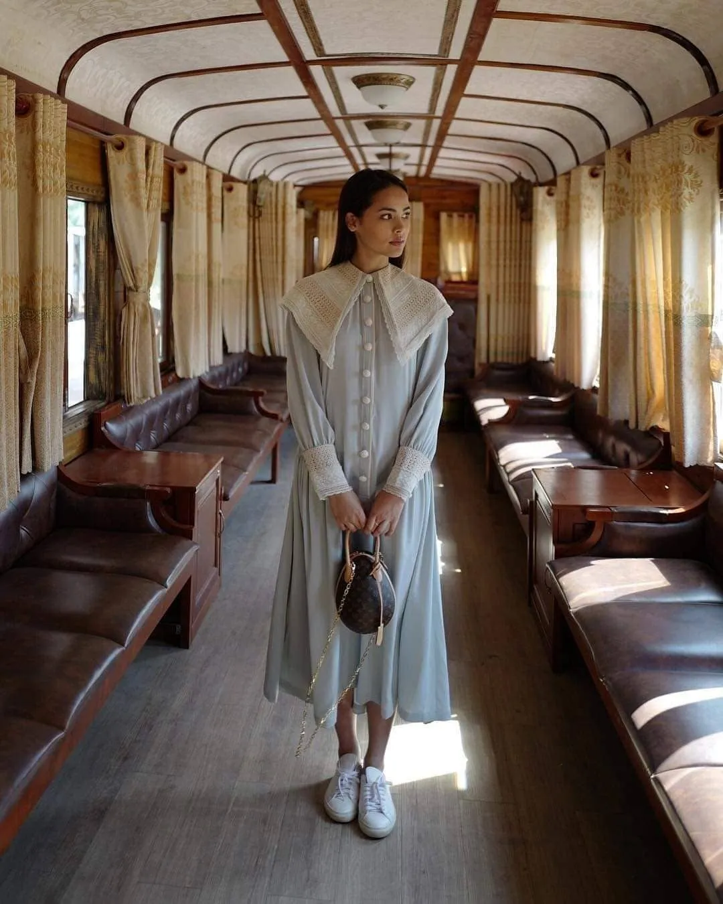
5. Gợi ý các điểm du lịch gần ga xe lửa Đà Lạt không nên bỏ lỡ
Sau khi tham quan và “sống ảo” tại ga xe lửa cổ Đà Lạt, bạn có thể dễ dàng kết hợp khám phá những địa điểm du lịch nổi bật xung quanh. Chỉ trong bán kính vài km, bạn đã có thể tận hưởng trọn vẹn vẻ đẹp thiên nhiên, kiến trúc và văn hóa đặc trưng của thành phố sương mù.
-
Quảng trường Lâm Viên (cách ga khoảng 1km): Nổi bật với biểu tượng hoa dã quỳ và nụ atiso khổng lồ, quảng trường là nơi diễn ra nhiều hoạt động vui chơi, biểu diễn nghệ thuật và cũng là điểm check-in quen thuộc của du khách mọi lứa tuổi.
-
Hồ Xuân Hương (khoảng 1km từ ga): Là trái tim thơ mộng của Đà Lạt, hồ Xuân Hương mang đến không gian thư giãn lý tưởng. Bạn có thể tản bộ quanh hồ, đạp vịt, ngồi xe ngựa hoặc đơn giản là ngắm cảnh và tận hưởng khí trời dịu nhẹ.
-
Chợ đêm Đà Lạt (cách ga tầm 2,5km): Đây là thiên đường ẩm thực và mua sắm về đêm. Từ bánh tráng nướng, sữa đậu nành nóng đến quà lưu niệm và thời trang, chợ đêm luôn sôi động và rực rỡ sắc màu, phù hợp để khám phá Đà Lạt về đêm.
-
Dinh Bảo Đại Đà Lạt (cách khoảng 3km): Dinh I là một biệt thự cổ mang phong cách châu Âu cổ điển, ẩn mình giữa rừng thông. Không gian nơi đây vừa trang nghiêm vừa nên thơ, thích hợp để tìm hiểu lịch sử và lưu giữ những bức ảnh đậm chất hoài cổ.

6. Gợi ý quán ăn ngon sau khi khám phá ga xe lửa Đà Lạt: Tiệm Nướng & Chill Xóm Lèo
Sau một buổi chiều lang thang khám phá ga xe lửa Đà Lạt – nơi lưu giữ dấu ấn thời gian và những toa tàu nhuốm màu cổ tích – nếu bạn muốn một chỗ vừa ấm cúng, vừa có view đẹp để nghỉ chân. Và Tiệm Nướng & Chill Xóm Lèo là điểm đến “chuẩn không cần chỉnh”.
Từ bàn ngồi ngoài trời của quán, bạn có thể nhìn thấy những đường ray xe lửa phía xa chìm dần vào ánh hoàng hôn. Khi trời chuyển màu, những khu nhà lồng dưới thung lũng bắt đầu lên đèn, tạo nên một bức tranh rực rỡ giữa sương chiều se lạnh. Vừa thưởng thức món nướng thơm lừng trên bếp than hồng, vừa ngắm thành phố lên đèn, cảm giác thật sự đáng giá sau một ngày rong ruổi.
Nếu bạn đang tìm một quán ăn ở Đà Lạt có đồ ăn ngon, view đẹp, không khí chill để kết lại hành trình, thì Xóm Lèo chính là nơi lý tưởng để dừng chân.
📍 Địa chỉ: 113 Huỳnh Tấn Phát, P.11, Đà Lạt
📞 Hotline: 0764 527 336 – 0899 428 434 – 0902 912 240
📩 Đặt Bàn: Tại Đây
📍 Chỉ Đường: Xem bản đồ
Ga xe lửa Đà Lạt là điểm dừng chân mang đậm dấu ấn thời gian, vừa cổ kính, vừa nên thơ – lý tưởng cho những ai yêu thích khám phá và “săn” ảnh đẹp. Sau khi rong ruổi check-in và đắm mình trong không gian hoài niệm tại nhà ga, bạn đừng quên ghé Tiệm Nướng & Chill Xóm Lèo để kết thúc hành trình bằng một bữa tối ấm cúng, đậm đà hương vị phố núi. Một ngày ở Đà Lạt sẽ thật trọn vẹn khi được thưởng thức cảnh đẹp, lưu giữ khoảnh khắc và quây quần bên bạn bè giữa không gian chill đầy cảm xúc.